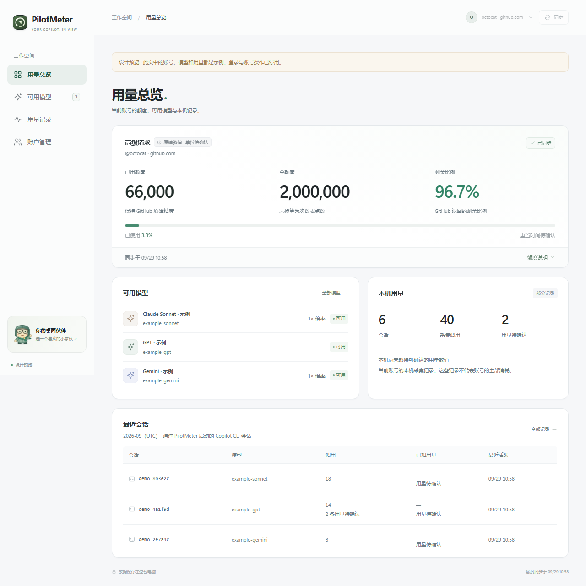
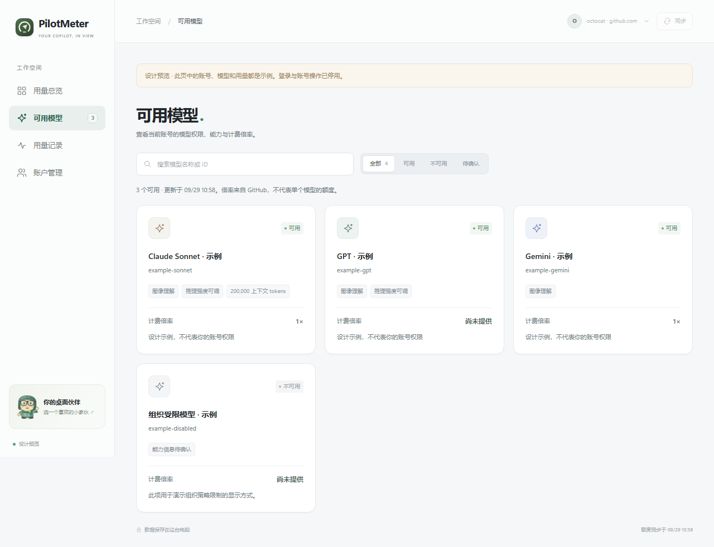
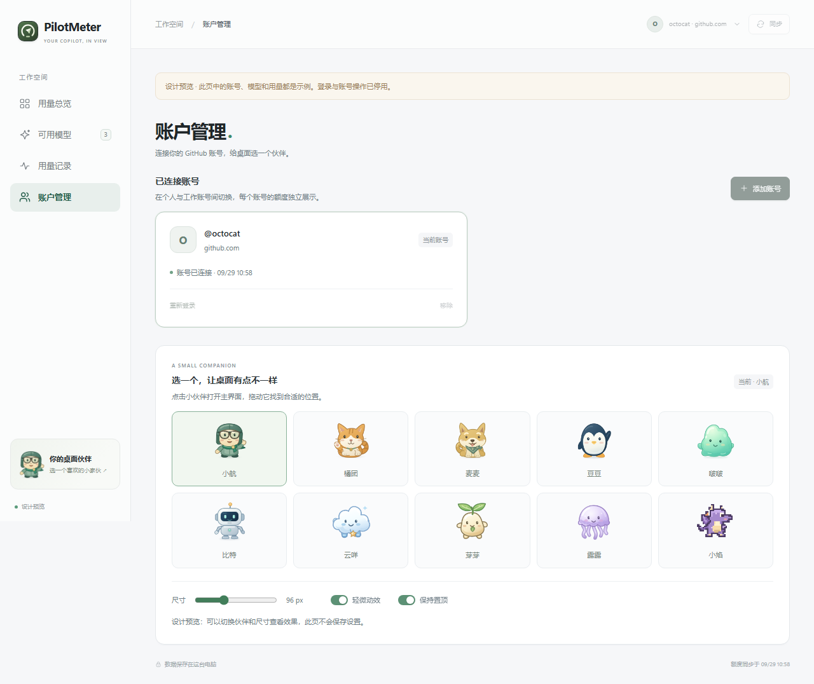

先看额度，再看细节
已用、总额、剩余并列。单位与比例明确区分，解释收进卡片底部，首页保留可用模型和本机摘要。
保留你的小 PET，把主窗口重做为 HTML + Tailwind CSS 工作台。用量、模型、账号各有位置，关键数字占据第一视觉层级。
打开交互设计稿 ↗查看页面与设计说明交互设计稿可直接双击打开，图片和样式均已内联。所有账号、模型及用量都是明确标记的合成示例；不执行真实登录。
已用、总额、剩余并列。单位与比例明确区分，解释收进卡片底部，首页保留可用模型和本机摘要。
冷白背景、炭黑文字和少量绿色强调。统一字体、边框、图标与间距，让真实数据成为界面重点。
登录立即打开，验证码、等待状态和失败重试一处可见。窄窗口可滚动，长数字保持完整。
总览 / 模型 / 记录 / 账户四个入口，桌面 PET 始终保留。

数量完整保留，不缩写成“万”或自动四舍五入。只有确定含义的数据，才使用对应的单位。
| 显示 | 含义 | 处理方式 |
|---|---|---|
66,000 | 六万六千；逗号是千位分隔。 | 已用与总额使用接口原始数值；不会除以 1000。 |
96.7% | 上游返回的剩余比例。 | 明确写“剩余比例”，保留百分号，不能当成剩余数量。 |
| 单位已确认 | 同一类别的数量可计算剩余。 | 用精确十进制计算总额减已用，保留小数精度。 |
| 单位待确认 | 尚不能称作 AI Credits 或请求次数。 | 标注原始数值，展示可信比例；不推算剩余 Credits。 |
| 尚未同步 / 不可用 | 缺少可靠快照。 | 展示原因与重试入口，不将未知显示成已用 0。 |
模型按名称搜索、按状态筛选；可用、不可用和待确认分开表达。账户页集中管理连接，十个宠物可以直接预览。


先显示当前状态，再获取设备码；网络错误在原位置解释并提供重试。
授权在系统浏览器完成。提示确认目标账号，并显示验证码有效期。
成功后同步额度与模型；过期码禁止继续使用。旧请求不会覆盖新登录。
窄窗口会调整导航和卡片布局；超长数字可滚动查看。账号切换时先清空旧快照，随后加载对应的额度、模型和记录。
PET 与主窗口共享当前账号、额度类别和宠物偏好。HTML 页面内嵌在独立 Windows 窗口中，点击 PET 不会打开普通浏览器页面。
字体采用系统无衬线字体与等宽数字；界面样式由 Tailwind 本地编译。实际 EXE 的主窗口使用 WebView2，运行时缺失时显示 Microsoft 官方安装引导。真实 GitHub 完整授权、组织账单对账与物理多显示器验证不由设计稿或合成测试证明。